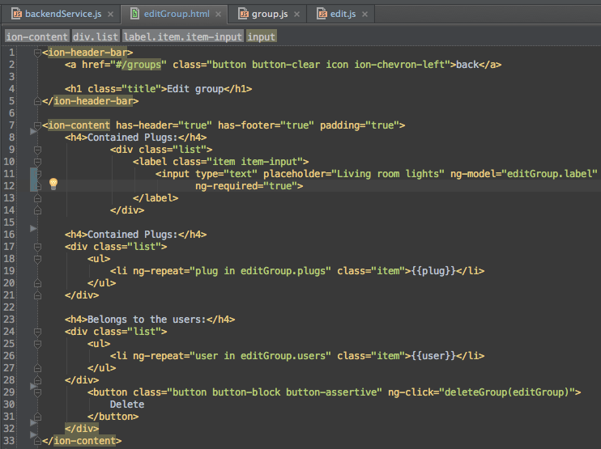
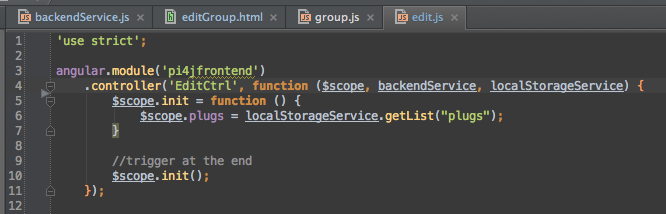
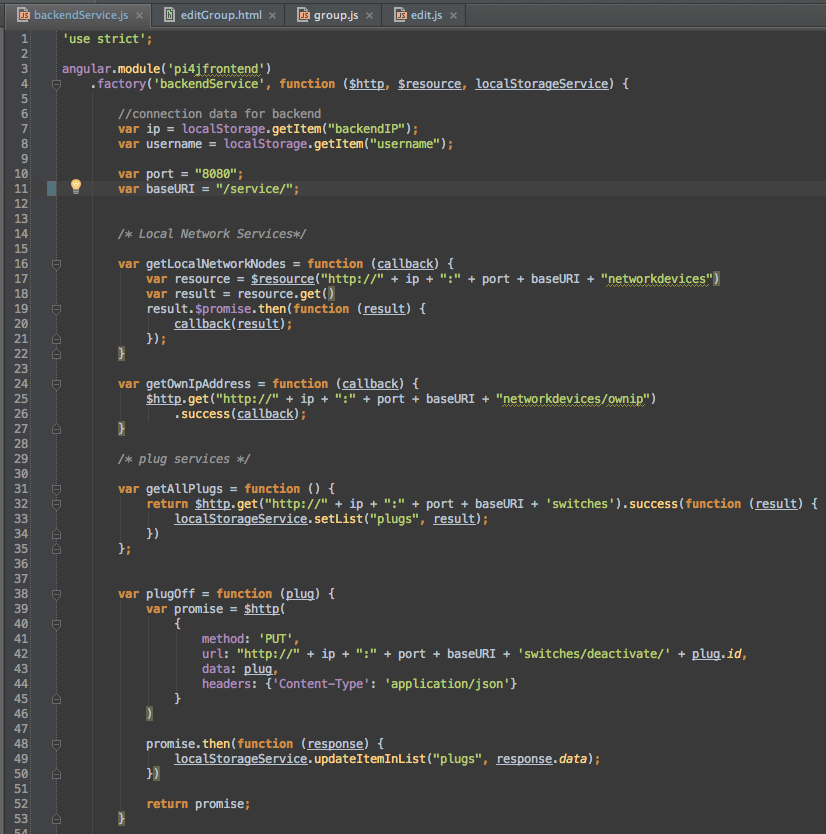
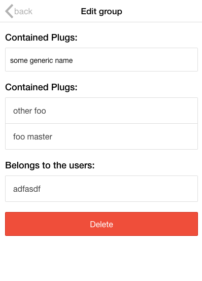

© 2014 OPITZ CONSULTING Deutschland GmbH
Section 8
Mobile Applications
Was gibt es
Native
Aktuell 3 wichtige Plattformen
Code Sharing fast unmöglich
Performance und technische Möglichkeiten dafür aber am größten
Web / Hybrid
Mobile Website entwickeln
gepackt in Phonegap auch in AppStore präsent, kann mit zusätzlichen Funktionen (native Adapter) angereichert werden
ein Kernaufwand + kleinere Aufwände für einzelne Plattformen
Prototyp
Wir erinnern uns:
Logik:
to go mobile:
Prototyp Architektur
View

Controller

Service

UI
